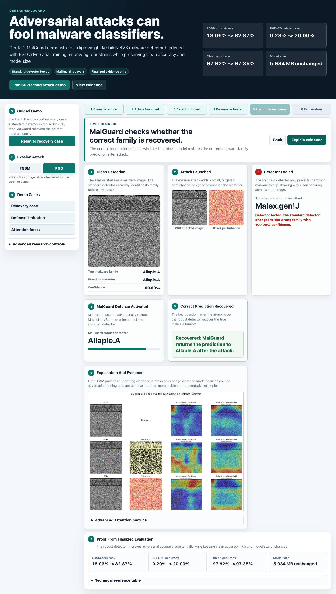

The Problem
- Malware classifiers can perform well on clean samples.
- Attackers can deliberately perturb inputs.
- A confident wrong malware-family prediction is a security failure.
Clean accuracy is not enough for cybersecurity.
Lightweight malware reliability for adversarial robustness and attention stability.
Clean accuracy is not enough for cybersecurity.
Can a lightweight malware image classifier remain accurate and robust under adversarial attack while staying efficient enough for practical deployment?
| Split | Samples |
|---|---|
| Train | 6,539 |
| Validation | 1,405 |
| Test | 1,395 |
| Model | Clean Accuracy | Macro F1 | Model Size |
|---|---|---|---|
| MobileNetV3 Small | 97.92% | 93.53% | 5.934 MB |
| EfficientNet-B0 | 96.06% | 87.99% | 15.57 MB |
MobileNetV3 was selected because it was smaller and more accurate.
| Condition | Accuracy | Macro F1 |
|---|---|---|
| Clean | 97.92% | 93.53% |
| FGSM eps=0.03 | 18.06% | 3.22% |
| PGD-20 eps=0.03 | 0.29% | 0.07% |
The standard detector is accurate, but not robust.
| Metric | Standard | MalGuard |
|---|---|---|
| Clean Accuracy | 97.92% | 97.35% |
| FGSM Accuracy | 18.06% | 82.87% |
| PGD-20 Accuracy | 0.29% | 20.00% |
| Model Size | 5.934 MB | 5.934 MB |

Grad-CAM is used as a reliability lens. Attacks can change what the model focuses on, and adversarial training appears to make attention more stable.
| Attack | Standard Top-20 IoU | MalGuard Top-20 IoU |
|---|---|---|
| FGSM | 0.0905 | 0.3364 |
| PGD | 0.1355 | 0.3607 |
CenTaD-MalGuard improves robustness while preserving lightweight deployment efficiency, with supporting evidence that robust training may stabilize attention.